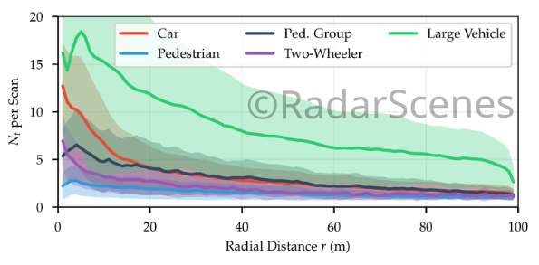
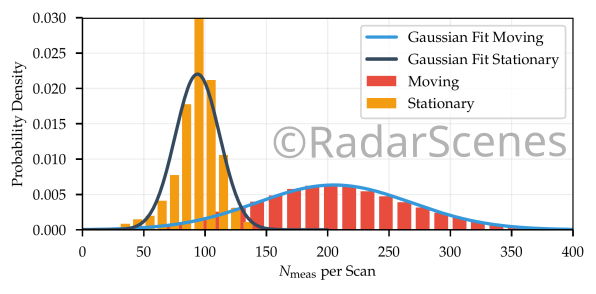
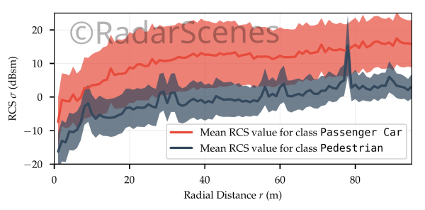

The Numbers
- Four radar sensors
- One documentary camera
- > 100 km driving
- > 4 hours recording time
- 158 different sequences
- > 7500 unique road users
- 11 different object classes
- About 4 million annotated detections
The Figures
Feel free to reproduce these figures right from the data set itself!
Number of detections for the five mapped classes (see labeling) in each scan versus radial distance. 
Number of detections measured by one of the sensors. Two cases are discerned: A moving ego-vehicle and a stationary ego-vehicle. 
Comparison of the RCS values of the classes car and pedestrian for different radial distances. The shaded areas are the standard deviation aroud the mean value (solid line).
